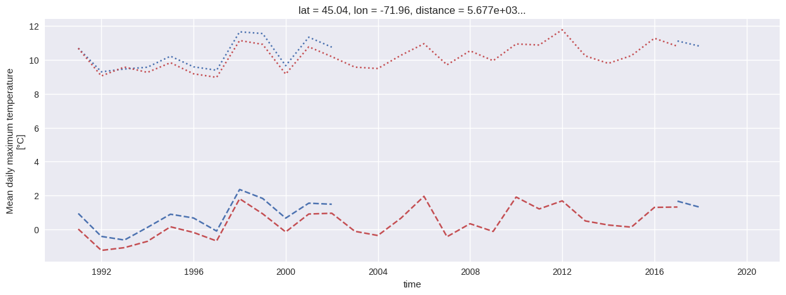

import xarray as xr
import xclim as xc
from xclim.core import units
from clisops.core.subset import subset_gridpoint
import matplotlib.pyplot as plt
from datetime import date
import warnings
warnings.filterwarnings(action='ignore') # 'once'
plt.style.use('seaborn-v0_8')
# Inputs
lat_in = 45
lon_in = -72
start_date = date(1991,1,1)
end_date = date(2020,12,31)
freq = 'annual'
datasets = {
"ECCC_AHCCD_gen3_temperature": "https://pavics.ouranos.ca/twitcher/ows/proxy/thredds/dodsC/datasets/station_obs/ECCC_AHCCD_gen3_temperature.ncml",
"ECCC_AHCCD_gen2_precipitation": "https://pavics.ouranos.ca/twitcher/ows/proxy/thredds/dodsC/datasets/station_obs/ECCC_AHCCD_gen2_precipitation.ncml",
"NRCANMet_v2": "https://pavics.ouranos.ca/twitcher/ows/proxy/thredds/dodsC/datasets/gridded_obs/nrcan_v2.ncml",
"RDRSv2.1": "https://pavics.ouranos.ca/twitcher/ows/proxy/thredds/dodsC/datasets/reanalyses/day_RDRSv2.1_NAM.ncml",
"ERA5-Land": "https://pavics.ouranos.ca/twitcher/ows/proxy/thredds/dodsC/datasets/reanalyses/day_ERA5-Land_NAM.ncml"
}
def aggregate(ds, var, freq='annual'):
freqs={
'month': 'MS',
'season': 'QS-DEC',
'annual': 'YS'
}
functs = {
'pr': xc.indicators.atmos.precip_average,
'tasmin': xc.indicators.atmos.tn_mean,
'tasmax': xc.indicators.atmos.tx_mean,
}
return functs[var](ds=ds, freq=freqs[freq])
fig, ax = plt.subplots(1,1, figsize=(15,5))
for idx, (name, url) in enumerate(datasets.items()):
ds = xr.open_dataset(url, chunks={'time': -1, 'lat':50, 'lon': 50}, decode_timedelta=False)
print(f"{10*'-'} {name} {10*'-'}")
#display(ds)
ds_pt = subset_gridpoint(ds,
lat=lat_in,
lon=lon_in,
start_date=start_date.strftime('%Y-%m-%d'),
end_date=end_date.strftime('%Y-%m-%d'),
add_distance=True)
# # adjust temp units
# for var in ds_pt.data_vars:
# if 'units' in ds_pt[var].attrs and ds_pt[var].units == 'K':
# ds_pt[var] = units.convert_units_to(ds_pt[var], "degC")
dist = f"dist = {ds_pt.distance.values/1000:0.1f} km"
print(dist)
# Style:
color = f"C{idx}"
line_styles = {"tasmin": "--", "tasmax": ":"}
tmp_vars = ['tasmin', 'tasmax']
if all(var in ds.data_vars for var in tmp_vars):
for var in tmp_vars:
ds_var = aggregate(ds=ds_pt, var=var, freq=freq)
if 'units' in ds_var.attrs and ds_var.units == 'K':
ds_var = units.convert_units_to(ds_var, "degC")
#display(ds_pt)
ds_var.plot.line(ax=ax,
linestyle=line_styles[var],
color=color,
label=f"{name} - {dist}" if var == 'tasmin' else None,
add_legend=False
)
plt.legend(bbox_to_anchor=(1.05, 1.0), loc='upper left')
plt.title(f"{freq.capitalize()} Minimum and Maximum Temperatures from Multiple Datasets between {start_date.year} and {end_date.year}");---------- ECCC_AHCCD_gen3_temperature ----------
dist = 22.9 km
---------- ECCC_AHCCD_gen2_precipitation ----------
dist = 43.3 km
---------- NRCANMet_v2 ----------
dist = 5.7 km
---------- RDRSv2.1 ----------
dist = 4.4 kmsyntax error, unexpected WORD_WORD, expecting SCAN_ATTR or SCAN_DATASET or SCAN_ERROR
context: Request^ Too Large: 32182.304 Mbytes, max=500.0
syntax error, unexpected WORD_WORD, expecting SCAN_ATTR or SCAN_DATASET or SCAN_ERROR
context: Request^ Too Large: 32182.304 Mbytes, max=500.0
syntax error, unexpected WORD_WORD, expecting SCAN_ATTR or SCAN_DATASET or SCAN_ERROR
context: Request^ Too Large: 32182.304 Mbytes, max=500.0
syntax error, unexpected WORD_WORD, expecting SCAN_ATTR or SCAN_DATASET or SCAN_ERROR
context: Request^ Too Large: 32182.304 Mbytes, max=500.0
syntax error, unexpected WORD_WORD, expecting SCAN_ATTR or SCAN_DATASET or SCAN_ERROR
context: Request^ Too Large: 32182.304 Mbytes, max=500.0
syntax error, unexpected WORD_WORD, expecting SCAN_ATTR or SCAN_DATASET or SCAN_ERROR
context: Request^ Too Large: 32182.304 Mbytes, max=500.0
syntax error, unexpected WORD_WORD, expecting SCAN_ATTR or SCAN_DATASET or SCAN_ERROR
context: Request^ Too Large: 32182.304 Mbytes, max=500.0--------------------------------------------------------------------------- RuntimeError Traceback (most recent call last) Cell In[17], line 75 72 ds_var = units.convert_units_to(ds_var, "degC") 73 #display(ds_pt) ---> 75 ds_var.plot.line(ax=ax, 76 linestyle=line_styles[var], 77 color=color, 78 label=f"{name} - {dist}" if var == 'tasmin' else None, 79 add_legend=False 80 ) 81 plt.legend(bbox_to_anchor=(1.05, 1.0), loc='upper left') 82 plt.title(f"{freq.capitalize()} Minimum and Maximum Temperatures from Multiple Datasets between {start_date.year} and {end_date.year}"); File /exec/braun/.conda/envs/energy-data/lib/python3.12/site-packages/xarray/plot/accessor.py:136, in DataArrayPlotAccessor.line(self, *args, **kwargs) 134 @functools.wraps(dataarray_plot.line, assigned=("__doc__",)) 135 def line(self, *args, **kwargs) -> list[Line3D] | FacetGrid[DataArray]: --> 136 return dataarray_plot.line(self._da, *args, **kwargs) File /exec/braun/.conda/envs/energy-data/lib/python3.12/site-packages/xarray/plot/dataarray_plot.py:505, in line(darray, row, col, figsize, aspect, size, ax, hue, x, y, xincrease, yincrease, xscale, yscale, xticks, yticks, xlim, ylim, add_legend, _labels, *args, **kwargs) 501 xplt, yplt, hueplt, hue_label = _infer_line_data(darray, x, y, hue) 503 # Remove pd.Intervals if contained in xplt.values and/or yplt.values. 504 xplt_val, yplt_val, x_suffix, y_suffix, kwargs = _resolve_intervals_1dplot( --> 505 xplt.to_numpy(), yplt.to_numpy(), kwargs 506 ) 507 xlabel = label_from_attrs(xplt, extra=x_suffix) 508 ylabel = label_from_attrs(yplt, extra=y_suffix) File /exec/braun/.conda/envs/energy-data/lib/python3.12/site-packages/xarray/core/dataarray.py:831, in DataArray.to_numpy(self) 820 def to_numpy(self) -> np.ndarray: 821 """ 822 Coerces wrapped data to numpy and returns a numpy.ndarray. 823 (...) 829 DataArray.data 830 """ --> 831 return self.variable.to_numpy() File /exec/braun/.conda/envs/energy-data/lib/python3.12/site-packages/xarray/namedarray/core.py:857, in NamedArray.to_numpy(self) 855 """Coerces wrapped data to numpy and returns a numpy.ndarray""" 856 # TODO an entrypoint so array libraries can choose coercion method? --> 857 return to_numpy(self._data) File /exec/braun/.conda/envs/energy-data/lib/python3.12/site-packages/xarray/namedarray/pycompat.py:111, in to_numpy(data, **kwargs) 109 if is_chunked_array(data): 110 chunkmanager = get_chunked_array_type(data) --> 111 data, *_ = chunkmanager.compute(data, **kwargs) 112 if isinstance(data, array_type("cupy")): 113 data = data.get() File /exec/braun/.conda/envs/energy-data/lib/python3.12/site-packages/xarray/namedarray/daskmanager.py:85, in DaskManager.compute(self, *data, **kwargs) 80 def compute( 81 self, *data: Any, **kwargs: Any 82 ) -> tuple[np.ndarray[Any, _DType_co], ...]: 83 from dask.array import compute ---> 85 return compute(*data, **kwargs) File /exec/braun/.conda/envs/energy-data/lib/python3.12/site-packages/dask/base.py:660, in compute(traverse, optimize_graph, scheduler, get, *args, **kwargs) 657 postcomputes.append(x.__dask_postcompute__()) 659 with shorten_traceback(): --> 660 results = schedule(dsk, keys, **kwargs) 662 return repack([f(r, *a) for r, (f, a) in zip(results, postcomputes)]) File /exec/braun/.conda/envs/energy-data/lib/python3.12/site-packages/xarray/core/indexing.py:578, in ImplicitToExplicitIndexingAdapter.__array__(self, dtype, copy) 574 def __array__( 575 self, dtype: np.typing.DTypeLike = None, /, *, copy: bool | None = None 576 ) -> np.ndarray: 577 if Version(np.__version__) >= Version("2.0.0"): --> 578 return np.asarray(self.get_duck_array(), dtype=dtype, copy=copy) 579 else: 580 return np.asarray(self.get_duck_array(), dtype=dtype) File /exec/braun/.conda/envs/energy-data/lib/python3.12/site-packages/xarray/core/indexing.py:583, in ImplicitToExplicitIndexingAdapter.get_duck_array(self) 582 def get_duck_array(self): --> 583 return self.array.get_duck_array() File /exec/braun/.conda/envs/energy-data/lib/python3.12/site-packages/xarray/core/indexing.py:794, in CopyOnWriteArray.get_duck_array(self) 793 def get_duck_array(self): --> 794 return self.array.get_duck_array() File /exec/braun/.conda/envs/energy-data/lib/python3.12/site-packages/xarray/core/indexing.py:657, in LazilyIndexedArray.get_duck_array(self) 653 array = apply_indexer(self.array, self.key) 654 else: 655 # If the array is not an ExplicitlyIndexedNDArrayMixin, 656 # it may wrap a BackendArray so use its __getitem__ --> 657 array = self.array[self.key] 659 # self.array[self.key] is now a numpy array when 660 # self.array is a BackendArray subclass 661 # and self.key is BasicIndexer((slice(None, None, None),)) 662 # so we need the explicit check for ExplicitlyIndexed 663 if isinstance(array, ExplicitlyIndexed): File /exec/braun/.conda/envs/energy-data/lib/python3.12/site-packages/xarray/backends/netCDF4_.py:103, in NetCDF4ArrayWrapper.__getitem__(self, key) 102 def __getitem__(self, key): --> 103 return indexing.explicit_indexing_adapter( 104 key, self.shape, indexing.IndexingSupport.OUTER, self._getitem 105 ) File /exec/braun/.conda/envs/energy-data/lib/python3.12/site-packages/xarray/core/indexing.py:1018, in explicit_indexing_adapter(key, shape, indexing_support, raw_indexing_method) 996 """Support explicit indexing by delegating to a raw indexing method. 997 998 Outer and/or vectorized indexers are supported by indexing a second time (...) 1015 Indexing result, in the form of a duck numpy-array. 1016 """ 1017 raw_key, numpy_indices = decompose_indexer(key, shape, indexing_support) -> 1018 result = raw_indexing_method(raw_key.tuple) 1019 if numpy_indices.tuple: 1020 # index the loaded np.ndarray 1021 indexable = NumpyIndexingAdapter(result) File /exec/braun/.conda/envs/energy-data/lib/python3.12/site-packages/xarray/backends/netCDF4_.py:116, in NetCDF4ArrayWrapper._getitem(self, key) 114 with self.datastore.lock: 115 original_array = self.get_array(needs_lock=False) --> 116 array = getitem(original_array, key) 117 except IndexError as err: 118 # Catch IndexError in netCDF4 and return a more informative 119 # error message. This is most often called when an unsorted 120 # indexer is used before the data is loaded from disk. 121 msg = ( 122 "The indexing operation you are attempting to perform " 123 "is not valid on netCDF4.Variable object. Try loading " 124 "your data into memory first by calling .load()." 125 ) File /exec/braun/.conda/envs/energy-data/lib/python3.12/site-packages/xarray/backends/common.py:249, in robust_getitem(array, key, catch, max_retries, initial_delay) 247 for n in range(max_retries + 1): 248 try: --> 249 return array[key] 250 except catch: 251 if n == max_retries: File src/netCDF4/_netCDF4.pyx:5079, in netCDF4._netCDF4.Variable.__getitem__() File src/netCDF4/_netCDF4.pyx:6051, in netCDF4._netCDF4.Variable._get() File src/netCDF4/_netCDF4.pyx:2164, in netCDF4._netCDF4._ensure_nc_success() RuntimeError: NetCDF: Authorization failure
